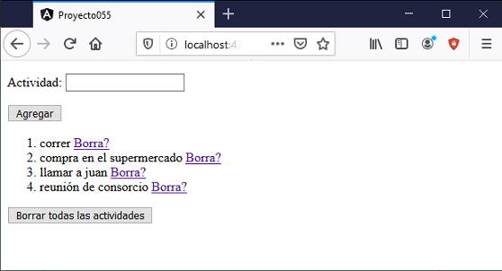

Para trabajar con formularios reactivos necesitamos importar la clase 'ReactiveFormsModule' en nuestro archivo app.module.ts y crear un objeto de la clase FormControl por cada control visual que contendrá nuestro formulario.
Nuestro primer problema con formularios reactivos será el más elemental, ya que contrendrá un solo control 'input' para el ingreso de una cadena.
Confeccionar una aplicación que permita ingresar actividades pendientes mediante un control 'input' de tipo 'text'.
Se deben listar todas las actividades ingresadas hasta el momento, además de poder borrar una en particular o todas a la vez.
Almacenar en forma local en el navegador las actividades mediante el API localStorage para evitar que se pierdan las actividades cuando se cierre el navegador.
Crearemos primero el proyecto:
ng new proyecto055
Importamos la clase 'ReactiveFormModule' modificando el archivo 'app.module.ts':
import { BrowserModule } from '@angular/platform-browser';
import { NgModule } from '@angular/core';
import { ReactiveFormsModule } from '@angular/forms';
import { AppComponent } from './app.component';
@NgModule({
declarations: [
AppComponent
],
imports: [
BrowserModule,
ReactiveFormsModule
],
providers: [],
bootstrap: [AppComponent]
})
export class AppModule { }
Trabajaremos con la componente que generar automáticamente Angular CLI cuando creamos el proyecto, pasamos a modificar la vista (app.component.html):
<p> Actividad:
<input type="text" [formControl]="actividad">
</p>
<p><button (click)="agregar()">Agregar</button></p>
<ol>
<li *ngFor="let acti of lista;let i=index">
{{acti}} <a (click)="borrar(i)" href="#">Borra?</a>
</li>
</ol>
<p><button (click)="borrarTodas()">Borrar todas las actividades</button></p>
Analizaremos este archivo en conjunto luego de presentar 'app.component.ts'
La clase asociada a la vista 'app.component.html' es el archivo 'app.component.ts' donde implementamos la siguiente lógica:
import { Component, OnInit } from '@angular/core';
import { FormControl } from '@angular/forms';
@Component({
selector: 'app-root',
templateUrl: './app.component.html',
styleUrls: ['./app.component.css']
})
export class AppComponent implements OnInit {
actividad = new FormControl();
lista!: string[];
ngOnInit(): void {
this.lista=[];
let datos=localStorage.getItem("actividades");
if(datos!=null) {
let arreglo=JSON.parse(datos);
if (arreglo!=null)
for(let actividad of arreglo)
this.lista.push(actividad);
}
}
agregar() {
this.lista.push(this.actividad.value);
localStorage.setItem('actividades', JSON.stringify(this.lista));
this.actividad.setValue('');
}
borrar(pos:number) {
this.lista.splice(pos,1);
localStorage.clear();
localStorage.setItem('actividades', JSON.stringify(this.lista));
}
borrarTodas() {
localStorage.clear();
this.lista=[];
}
}
Lo primero que hacemos es importar la clase 'FormControl':
import { FormControl } from '@angular/forms';
Dentro de la clase 'AppComponent' creamos un objeto de la clase 'FormControl' llamado 'actividad' (uno solo ya que solo tenemos un control de entrada de datos):
actividad = new FormControl();
Este atributo 'actividad' se asocia con la vista mediante la sintaxis:
<input type="text" [formControl]="actividad">
La cadena que carga el operador en el control visual luego se la puede acceder mediante la propiedad 'value' y si queremos cambiar su contenido disponemos del método 'setValue'.
El problema requiere que se almacenen todas las actividades que ingresa el usuario por teclado, esto sucede en el arreglo 'lista'. La definimos dentro de la clase:
lista!: string[];
Cuando el operador presiona el botón de 'Agregar' se llama el método 'agregar' y procedemos a recuperar el dato del control visual mediante la propiedad value y la agregamos al arreglo:
this.lista.push(this.actividad.value);
Inmediatamente procedemos a borrar el contenido del control visual llamando al método 'setValue':
this.actividad.setValue('');
Nuestro problema requiere almacenar cada una de las actividades en un arreglo que se pasa a mostrar en la vista mediante la directiva estructural *ngFor:
<ol>
<li *ngFor="let acti of lista;let i=index">
{{acti}} <a (click)="borrar(i)" href="#">Borra?</a>
</li>
</ol>
Vimos hasta ahora todo lo relacionado con el control FormControl, pero nuestro problema requiere que la lista de actividades no se borre al cerrar el navegador, para ello utilizamos el API localStorage que proporciona HTML5.
Cuando se presiona el botón 'agregar', luego de guardar la actividad del formulario procedemos a almacenar mediante el método 'setItem' del objeto 'localStorage' los datos de la lista pero en formato JSON:
agregar() {
this.lista.push(this.actividad.value);
localStorage.setItem('actividades', JSON.stringify(this.lista));
this.actividad.setValue('');
}
Si se presiona el botón de borrar todas las actividades procedemos por un lado a borrar los elementos del arreglo y además a borrar los datos almacenados en 'localStorage':
borrarTodas() {
localStorage.clear();
this.lista=[];
}
Otro punto importante es que cuando se ejecuta el método 'onInit' al cargar se la componente, verificamos si hay datos almacenados en el 'localStorage' para leerlos y cargar el arreglo 'lista' con los datos previos de ejecuciones anteriores de la aplicación Angular:
ngOnInit(): void {
this.lista=[];
let datos=localStorage.getItem("actividades");
if(datos!=null) {
let arreglo=JSON.parse(datos);
if (arreglo!=null)
for(let actividad of arreglo)
this.lista.push(actividad);
}
}
Si ejecutamos la aplicación tenemos una interfaz similar a:
Podemos probar esta aplicación en la web aquí.